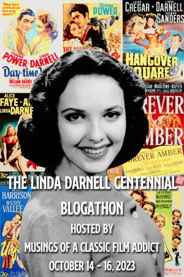
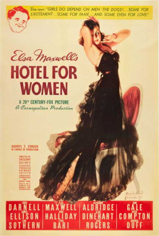
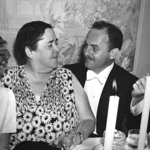
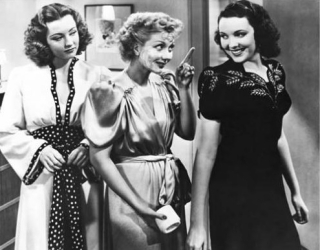
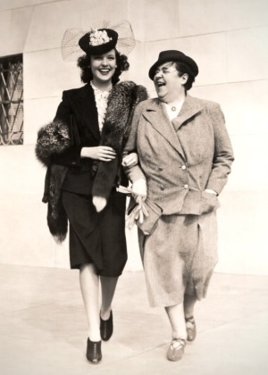
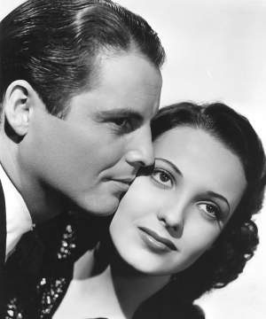
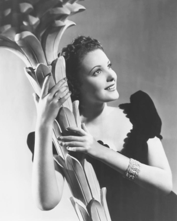

The Linda Darnell centennial blogathon presented an opportunity for me to learn more about this classic Hollywood star that I barely knew. At the time the blogathon was announced, I had only seen six of her movies. My favorites were Hangover Square (1945) and Unfaithfully Yours (1948). The others were A Letter to Three Wives (1949), It Happened Tomorrow (1944), Fallen Angel (1945) and The Mark of Zorro (1940).
To expand my knowledge, I chose to write about a movie I had not seen yet. I initially leaned toward City Without Men (1942). Unfortunately, the copy that I viewed was barely intelligible. So I eagerly switched to Hotel for Women (1939). While that film is also only available in rough copies, the sound quality is good enough to understand the dialogue.
Hotel for Women is the story of a group of young models who reside at a hotel in Manhattan adjacent to Central Park. This was Darnell's very first Hollywood film, yet she has the lead role. She plays a new arrival who quickly becomes a top cigarette ad model, and just as quickly is dropped. Other top roles are played by Ann Sothern as Darnell's mentor, Lynn Bari as Darnell's romantic rival, James Ellison as her status-seeking ex-boyfriend, and John Halliday as a rich womanizer and suitor to Darnell. Elsa Maxwell serves as a one woman Greek chorus and offers this concluding summary:
Men create the world. Women go around competing in it. All I can say is, it’s a wonder more men aren’t shot!
Monetta becomes Linda
Monetta Darnell was born in Dallas, Texas, on October 16, 1923 to a family of modest means. Her mother had long-held ambitions to be a performer, and she transferred those ambitions to her daughter. Monetta attempted a Hollywood audition in early 1938, and even won a screen test at 20th Century-Fox. But the studio talent scout who had discovered her then told her that she was too young and should return to Dallas. A year later, she tried again. This time she was signed by Fox and moved to Hollywood in early April, 1939. Within a couple weeks, despite her lack of film experience and age of merely 15 years, she was working in the lead role in Hotel for Women under the new name of Linda.
Prologue
Hotel for Women originated several months before Darnell's arrival in Hollywood as a project to exploit the trend of female-dominated shows—a trend accelerated by the success of The Women on Broadway over the previous two years. 20th Century-Fox chief Darryl Zanuck sent screenwriter Kathryn Scola to New York to gain first-hand experience of a "swank hostelry catering exclusively to the ladies," as Louella Parsons put it in a Feb. 2, 1939 column. "Among the guests are highly paid models, career women and others who live by themselves in the big town."
Zanuck signed Elsa Maxwell as a technical advisor in early February, and the film project was officially titled Elsa Maxwell's Hotel for Women to cash in on her notoriety. Maxwell, 56 years old in 1939, was an example of a celebrity who was famous for being famous. Her skill, other than self-promotion, lay at staging notable parties for the rich and famous, including popularizing of party gimmicks such as scavenger hunts. She parlayed this talent into a prominent media career in newspaper and radio. Hotel for Women would be her first foray into feature films. Maxwell not only advised on the film, but contributed to the screenplay and planned to perform a role in the movie. Louella Parsons wrote that Maxwell "will play herself in Hotel for Women and be hostess at an original party such as she herself might give. ... Darryl [Zanuck], who has great appreciation of Miss Maxwell's ability, told me he would give her carte blanche to let the whole world see her idea of the way society entertains."
Fox director Gregory Ratoff was soon assigned to direct the Elsa Maxwell project and Claudette Colbert was mentioned as a likely lead. Louella wrote in February, "The Colbert contract hasn't been signed, but rumor is strong that Claudette will arrange her schedules so she can make the picture." Colbert's possible role was not brought up again. Loretta Young also may have turned down the lead role, according to later reports.
With little success at finding an established star for the lead, Darryl Zanuck set his sights on casting a fresh—and cheaper—face. Wendy Barrie and Nancy Kelly were mentioned at times in February and March. But Zanuck had his eye on young Monetta Darnell as early as March, even though she was not in Hollywood or even signed by 20th Century-Fox yet.
Darnell's biographer Ronald Davis wrote that Zanuck "liked her photographs, ran her test footage, and thought she might have enough star quality to play the lead in Hotel for Women. But Darnell had entered a radio contest sponsored by RKO in February, so that studio held an option on her, preventing Fox from signing Darnell. The Fox reps kept quiet and waited for RKO's option to expire in early April. The starting date of Hotel for Women was pushed back from late March to late April.
In the first week of April, Darnell moved to Hollywood and went on salary at Fox at $75 a week. Studio drama coach Florence Enright began coaching her on her walking and confidence. Darnell and her family were cautioned to say little to the press, as Fox was planning a big publicity roll out in the near future--under her new name. Zanuck chose the name Linda because he felt it would "advertise her beauty and suggest a Latin quality that matched her coloring." [Davis]
Two weeks later, announcements hit the trade columns that a "newcomer" was on the rise. Columnist Jimmy Fidler wrote on April 20: "And now a girl named Linda Darnell, entirely innocent of dramatic experience, is to be spotted in the lead of Hotel for Women as a first role. ... The old-line stars are on the way out; new faces are in demand."
Darnell was 15 years old, but her age was often quoted in the press as 17, or even 19.
Production
The day after Darnell's announcement, and just a few days before filming was to begin, Fox announced a more established actress for another of the lead roles in Hotel for Women. Louella Parsons' April 21 column included a subhead, "Ann Sothern Gets Lead in Hotel for Women". This is Ann Sothern in the brief period after which her breakout film of Maisie had been filmed, but before it had been released to far greater than expected success. Sothern had been playing substantial roles in Hollywood films for six years and was coming off a career revival after her supporting role in the previous years' Trade Winds. Parsons wrote that "Darryl Zanuck has made [Sothern] the femme lead, which I consider smart casting, for Ann is a capable trouper and always gives a good account of herself."
The Fox studio publicity people attempted to play up a rivalry between the MGM current production that was adapting the stage play The Women and Fox's Hotel for Women. A couple days after Sothern was announced for the cast, Parsons wrote that director Gregory Ratoff had told her: "This is Ratoff's answer to The Women. You, my dear, will have a bathtub scene that will make the play look like a bird bath." Later, a columnist quoted Elsa Maxwell as saying to Norma Shearer, star of MGM's film, "'My dear,' hissed Elsa Maxwell, 'I understand The Women will be released as a trailer for Hotel for Women.'"
Other publicity during production mostly centered around Elsa Maxwell's adjustment to being in front of the cameras, and director Ratoff's exuberance and broken English. An example item from Erskine Johnson: "When Elsa Maxwell pronounced Syracuse as 'Sarahcuse' for a scene in Hotel for Women, Director Gregory Ratoff stopped the camera and said: 'You are working with me only one week and already you can't speak Ainglish.'"
Later publicity claimed:
A momentary setback for Elsa was when she found that she had to stage a cocktail party for the picture. This was contrary to her principles as she has never given one in her life and considers them a commonplace form of entertainment. "Cocktail parties," said Elsa, "are given for people you do not care to invite to lunch or dinner." She solved the problem by staging a lavish party that outdid all other cocktail parties, and then wrote into the script her dialogue which kids this whole institution.
Aftermath
In late May, as filming neared completion, director Ratoff said of Darnell, "Linda is going to be a star overnight in her first picture." The studio was also looking for Elsa Maxwell's next vehicle. Sheilah Graham wrote that "After her current Hotel for Women, the roly-poly party giver gets a role in 'Public Debutante Number One'. Surely they don't mean Elsa?"
Filming wrapped in early June, and Ratoff was immediately sent to work for David O. Selznick on Intermezzo, starring Leslie Howard and Ingrid Bergman, in her first Hollywood film.
As 20th Century-Fox planned a release of Hotel for Women for late summer, they also gave Linda Darnell her next assignment—in a supporting role in the big budget John Ford western Drums Along the Mohawk, starring Claudette Colbert and Henry Fonda, which was going to Utah for extensive location shooting starting July 1.
Hotel for Women was first shown to the public at a preview in Los Angles on July 27. Los Angeles Times columnist Edwin Schallert wrote that it was a "very efficiently made contrivance featuring young feminine players especially and giving a play to romance," with a tired plot line in the final act. He calls Darnell, "Miss Barnell" twice and describes her performance as "pleasing, though as yet perhaps somewhat undefined as a screen personality." He also wrote, "Ann Sothern is very good in her semi-stellar part," and "Miss Maxwell is no Marie Dressler. That might as well be settled now. She is good because she is natural in the few scenes allotted to her, but the role she plays is pretty incidental."
The reviewer for the Hollywood Citizen-News described the film as "unmitigatedly tedious, vacuous and old-fashioned, ... the doings of the Elsa Maxwell smart set, as chronicled on screen, were almost as boring as the doings of the Elsa Maxwell smart set in real life. ... Linda Darnell is still mainly decorative, but she has a fresh and vivid physical appeal and won considerable favor with last night's preview goers. She ought to be in pictures. ... Miss Sothern, like the cavalry, comes on screen now and again to rescue the picture, but eventually gives it back to the Indians."
The most influential Hollywood columnists mostly praised Linda Darnell. Louella Parsons did so repeatedly over the next few days, getting more emphatic each day. July 30: "She is really a promising newcomer." July 31: "Producers yell 'wolf' so often about their discoveries that it's nothing short of a nine days' wonder when a girl like Linda Darnell really lives up to advance adjectives." Aug 1: "If a star can be born over-night, that's what happened to Linda Darnell after the preview of Hotel for Women." Mark Hellinger wrote on Aug. 3: "The Darnell lassie needs a bit of polish, but she's definitely on her way. Watch her go." Hedda Hopper wrote the same day about Darnell: "There's a real bet if I ever saw one."
The favorable reaction to Darnell after the preview appears to have served like a bat signal to Darryl Zanuck, who shifted Darnell into immediate star-building mode. He pulled her out of Drums Along the Mohawk—scrapping all her scenes already filmed in Utah, and recasting other scenes with Dorris Bowden—because he did not want Darnell to follow up her initial success in a secondary role. She was also nixed as the leading lady opposite the studio's top male star Tyrone Power in Johnny Apollo. Briefly, she was announced for the lead in the upcoming 'Public Deb No. 1' before Zanuck finally settled on costarring her with Power in Day-Time Wife, which would begin shooting in September.
Meanwhile, Hotel for Women had begun its gradual rollout across the country, opening in some mid-size cities in early August, and more throughout the month until its scheduled openings in Los Angeles on Aug. 23 and New York City on the 25th. Darnell was sent to her hometown of Dallas for the opening of Hotel for Women there on Aug. 17, which became a major local event, with 2500 people greeting her arrival at the train station and another large crowd gathered outside the theater where she gave a short speech before the screening: "Words fail me when I try to express my appreciation for the marvelous reception given me by the people of Dallas. Everything was perfect and my only regret was that I can't stay longer." (Davis)
A week later, Hotel for Women hit New York City, where the reception was less than glowing. Kate Cameron wrote in the New York Daily News: "Darryl Zanuck might better have remained silent about Linda Darnell, his latest candidate for stardom, until he had been able to offer her a vehicle geared to take her to the heights of cinema fame. Hotel for Women, which opened at the Roxy Theatre yesterday, is made of brittle, unsubstantial material that is far more apt to throw the pretty tyro for a loss than to carry her safely to the high spot where 20th Century-Fox exploiters believe she belongs. Linda is a beauty with a sweet, fresh look that is enormously appealing. But the part she plays gives her little, if any, opportunity to show that she can act." Frank Nugent wrote in the New York Times: "Beyond this nothing really need be said about the picture except that it introduces a newcomer, one Linda Darnell, who is as pretty as a model should be and probably will not be challenging Miss Bette Davis's academy title for quite a few years."
Much of what few positive notices the movie received continued to go to Ann Sothern—who, since filming of Hotel for Women concluded, had hit it big as the title character in MGM's sleeper hit, Maisie. Cameron of the Daily News claimed that Sothern was the "one really bright spot of the film," while Nugent of the Times added, "Ann Sothern... handles her too-few comedy lines with an ease that demonstrates again that she is Hollywood's best least-recognized comedienne. Some day a script, a director and Miss Sothern are going to meet and bring the house down. Hotel for Women is, naturally, not the place for such a rendezvous."
Elsa Maxwell's feature film career did not last much longer, dying after another role as herself in 20th Century-Fox's Elsa Maxwell's Public Deb No. 1 (1940). She continued her celebrity status in newspapers, magazines and radio as "America's foremost authority on how to be popular and how to have fun in life".
Zanuck's Linda Darnell publicity train had such momentum that the tepid reaction that her debut picture received from the New York critics could do little to derail it. Darnell would go on to near equal, above-the-title, billing with Tyrone Power in her second film, Day-Time Wife (1939), and then star in a role very similar to herself in a pseudo-autobiographical film, depicting some of the events of her rise to Hollywood: Star Dust (1940). Less than a year after her arrival in Hollywood, 16 years old, Linda Darnell placed her hand and footprints in cement at Grauman's Chinese Theater alongside long time Hollywood legends.
Sources
- Newspapers.com archives for United States newspapers
- Hollywood Beauty: Linda Darnell and the American Dream by Ronald L. Davis, University of Oklahoma Press
- Media History Digital Library archives of Hollywood fan magazines and trade papers
Specific sources not otherwise specified in the article
- "swank hostelry..." — Louella Parsons syndicated column, Feb. 2, 1939
- "will play herself..." — Parsons, Feb. 12, 1939
- "The Colbert contract..." — Parsons, Feb. 2, 1939
- Loretta Young also may have turned down... — Harold W. Cohen, Pittsburgh Post-Gazette, Aug. 26, 1939
- "And now a girl..." — Jimmie Fidler syndicated column, Apr. 20, 1939
- "Ann Sothern gets lead..." — Parsons, Apr. 21, 1939
- "This is Ratoff's answer..." — Parsons, Apr. 23, 1939
- "When Elsa Maxwell pronounced..." — Erskine Johnson syndicated column, May 22, 1939
- "A momentary setback..." — Pittsburgh Sun-Telegraph, July 23, 1939
- "Linda is going to be..." — Wichita Falls-Times, May 28, 1939
- "After her current..." — Sheilah Graham syndicated column, May 25, 1939
- "very efficiently made contrivance..." — Edwin Schallert, Los Angeles Times, Jul. 28, 1939
- "unmitigatedly tedious..." — James Francis Crow, Hollywood Citizen-News, Jul. 28, 1939
- "Darryl Zanuck might better..." — Kate Cameron, New York Daily News, Aug. 26, 1939
- "Beyond this nothing..." — Frank Nugent, New York Times, Aug. 26, 1939
- "America's foremost authority…" — How to Have Fun Without Beauty, Photoplay, Sep. 1941
--
This post is a contribution to the Linda Darnell Centennial blogathon. See the blog Musings of a Classic Film Addict for the other entries.